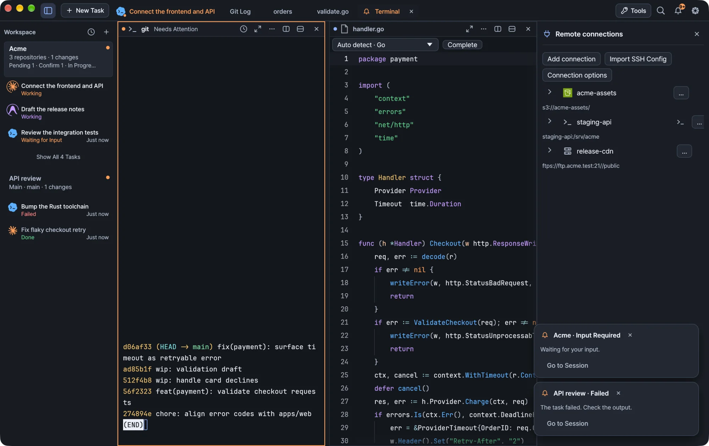
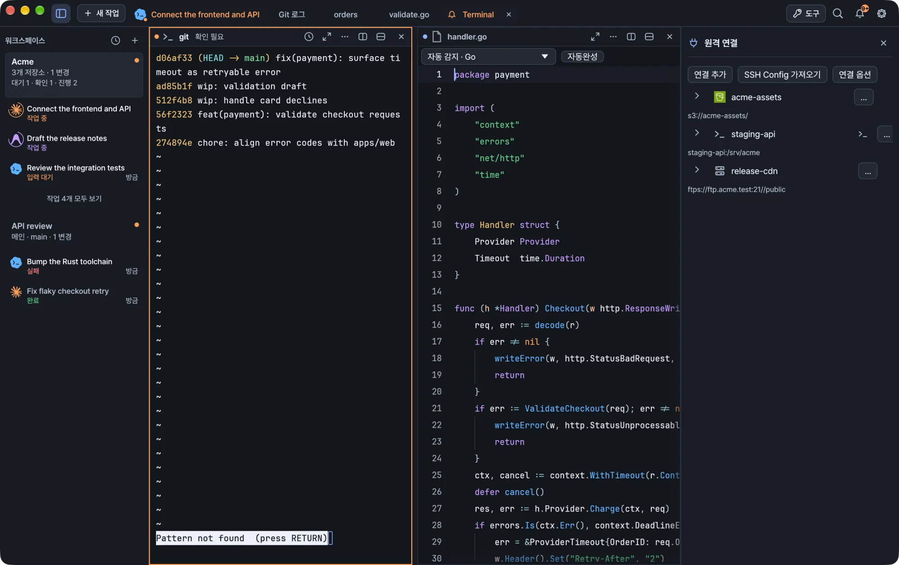

Browse and edit files on Amazon S3, Google Cloud Storage, OCI Object Storage, Cloudflare R2, FTP/FTPS and SFTP, and open SSH terminals from your SSH config.
Kiln browses object storage, FTP servers and SFTP hosts in the workspace inspector, next to your terminals, databases and local files. Remote files open in the same editor as local ones, and SSH hosts from your OpenSSH config are ready to pick.

Kiln running a demo workspace.
Add a connection
Choose Tools → Remote connections in the titlebar, then add a named connection. The tool opens alongside your terminal task without replacing it.
Type
What you provide
Amazon S3, Google Cloud Storage, OCI Object Storage, Cloudflare R2
Authentication, then a bucket
FTP / FTPS
Host, port and username
SFTP / SSH
A host from SSH Config host, or Enter manually
Saved connection settings contain names and addresses. Passwords and keys go to Kiln's credential store (the macOS Keychain on a Mac). See Credentials.
Object storage
Choose authentication first, then the bucket. Once authentication and any required scope are ready, Kiln loads the list of buckets in the background. If there is only one, it is selected for you.
Provider
Authentication and scope
AWS S3
Saved AWS profile, Default AWS authentication, or Enter keys manually. Listing buckets needs permission to list the account's buckets.
Google Cloud Storage
Native authentication lists the project you specify. The selected CLI configuration's project is filled in when available.
OCI Object Storage
Native authentication needs a compartment OCID. The profile's region and namespace settings stay in effect.
Cloudflare R2
Native authentication uses the account you specify. The list covers the default jurisdiction.
S3-compatible
Uses that service's bucket-list API. What you see depends on the service and your credentials.
If your credentials can reach a known bucket but cannot list buckets, use Enter manually for that bucket. A successful bucket list does not prove you can write to it.
Kiln never creates buckets, signs you in or changes your cloud credentials while it looks them up.
AWS profiles
With Saved AWS profile, Kiln reads profiles from ~/.aws/config and ~/.aws/credentials, and follows AWS_CONFIG_FILE and AWS_SHARED_CREDENTIALS_FILE if you set them. Kiln saves the profile name, not a copy of its keys, and never modifies your AWS files. A profile's region fills the region field until you edit it.
For profiles that use SSO, roles or credential_process, install AWS CLI v2 and complete the profile's usual AWS login first. Kiln resolves the credentials through the CLI when it connects. If the selected profile is unavailable or expired, you get an error. Kiln does not fall back to another account.
Endpoint, starting prefix and path-style addressing are under Advanced connection settings.
Reusable authentication
To use the same identity for several buckets, expand Save as authentication profile, give it a name and save. No bucket is needed. Select the profile again later, rename it by saving under a new name, or delete it.
Each saved bucket connection keeps its own copy of the secret it needs, so renaming or deleting a reusable profile does not break existing connections.
FTP and FTPS
Enter the host, port and username. FTPS uses explicit TLS and validates the server certificate.
Warning Plain FTP sends everything unencrypted, including your password. Use it only when your server requires it.
SFTP and SSH hosts
Pick a host from the SSH Config host dropdown. Kiln reads ~/.ssh/config and its static Include files, and fills in the host, username, port and key path. To use another config file, choose it under Advanced connection settings. To connect by hostname or IP address without an SSH alias, choose Enter manually.
Kiln only reads your SSH config. It runs no SSH commands, Match exec, authentication or network connections, so conditional settings are resolved by OpenSSH when you connect.
A selected host keeps its alias, jump hosts and other OpenSSH settings.
Fields you leave untouched follow your config at connection time.
Fields you edit become overrides, shared by SFTP and Open SSH terminal. Clear an override to follow the config again.
A key path adds an identity for OpenSSH. It does not restrict the connection to that key.
SSH terminals and host keys
Open SSH terminal opens a terminal to the same host, using the same overrides as SFTP. The SFTP browser uses OpenSSH key or agent authentication and needs a known host key. Kiln never turns off host-key verification.
For a new server:
Open its SSH terminal.
Check and accept the server fingerprint through OpenSSH.
Reconnect the file browser.
Password-only hosts work in the SSH terminal. The SFTP browser needs key or agent authentication that runs without prompts.
Browse and edit
Select a saved connection to browse it in the inspector. The connection shows its bucket or host and the current path.
Double-click a folder to enter it, and use the up arrow to go back. The up control is disabled at the starting directory.
Use the path field, filter and refresh controls beside the file list. S3 listings show Load more when another page is available.
Upload, download, rename, delete and create folders from the toolbar or the context menu.
Open a file to edit it in its own tab in the main workspace, with the same editor as local files. Two remote files with the same name keep separate tabs. Browsing folders never replaces your terminal or the file you are editing.
Action
What it does
Save remotely
Checks that the remote file still matches the version you opened, then uploads your changes
Keep local copy
Saves a copy without writing to the server
Remote editing is limited to 8 MB. Download larger or non-text files and work on them locally. Unsaved remote text is kept with Kiln's saved work, and restoring it never uploads anything on its own. If you change a connection's settings after opening a file, remote saves for that file are blocked and your local draft stays available.
To pick up changed connection settings, choose Reconnect. It reloads the saved profile and credentials and returns to the starting directory. Reconnect is unavailable while you are editing or transferring.
Transfers
Transfers run in the background and keep going while the inspector is hidden. Kiln shows their progress, and you can cancel them.
Upload several files with the picker or by dropping them on the file list. They transfer in order, and Kiln asks before replacing existing files.
Cancelling stops the rest of the upload queue. The current step may take a moment to finish.
Downloads replace the local file only after they complete.
Only empty folders can be deleted. There is no hidden recursive delete.
After a cancel or a server error, refresh to see the actual remote state.
Wait for transfers to finish, or cancel them, before you close the workspace or quit. A transfer recovered after a restart is a notice to check its result. Kiln never retries it automatically.
S3 limits
Uploads and renames support objects up to 5 GiB.
Folder prefixes cannot be renamed.
Rename is a copy followed by a delete. The source is deleted only after the copy succeeds.
Credentials
Edit a saved connection to replace its credentials.
In manual-key mode, empty fields keep the saved keys. Enter the access key and secret key together to replace them.
Replacing S3 keys clears the old session token unless you enter a new one under Temporary session token.
Switching to a saved profile or default AWS credentials removes the manual keys Kiln stored.
FTP connections offer Remove saved credentials in the edit form.
Changing the connection type clears the earlier protocol's credentials.
Windows
SFTP and SSH use Windows OpenSSH, and C:\… paths in your SSH config work as written.
Cloud CLIs installed as .cmd shims are found through PATHEXT, and the gcloud and Wrangler folders follow %APPDATA%.
문서도구
원격 파일과 SSH
Amazon S3, Google Cloud Storage, OCI Object Storage, Cloudflare R2, FTP/FTPS, SFTP의 파일을 살펴보고 편집하며, SSH 설정에 있는 호스트로 SSH 터미널을 엽니다.
Kiln의 워크스페이스 인스펙터에서는 터미널, 데이터베이스, 로컬 파일과 함께 오브젝트 스토리지, FTP 서버, SFTP 호스트도 살펴볼 수 있습니다. 원격 파일은 로컬 파일과 같은 편집기에서 열리고, OpenSSH 설정에 있는 SSH 호스트는 바로 골라 쓸 수 있습니다.

데모 워크스페이스로 실행한 Kiln
연결 추가하기
제목 표시줄에서 도구 → 원격 연결을 선택한 뒤, 이름을 붙여 연결을 추가합니다. 이 도구는 터미널 작업을 가리지 않고 그 옆에 열립니다.
유형
입력할 정보
Amazon S3, Google Cloud Storage, OCI Object Storage, Cloudflare R2
인증 정보, 그다음 버킷
FTP / FTPS
호스트, 포트, 사용자 이름
SFTP / SSH
SSH Config 호스트에서 고른 호스트, 또는 직접 입력
저장된 연결 설정에는 이름과 주소가 들어 있습니다. 비밀번호와 키는 Kiln의 자격 증명 저장소(Mac에서는 macOS 키체인)에 보관됩니다. 자격 증명을 참고하세요.
오브젝트 스토리지
인증 방식을 먼저 고르고, 그다음 버킷을 고릅니다. 인증과 필요한 범위 설정이 끝나면 Kiln이 백그라운드에서 버킷 목록을 불러옵니다. 버킷이 하나뿐이면 자동으로 선택됩니다.
제공자
인증과 범위
AWS S3
저장된 AWS 프로필, 기본 AWS 인증, 직접 키 입력 중 하나를 고릅니다. 버킷 목록을 불러오려면 계정의 버킷을 나열할 권한이 있어야 합니다.
Google Cloud Storage
네이티브 인증은 지정한 프로젝트의 버킷을 나열합니다. 가능하면 선택한 CLI 구성의 프로젝트가 자동으로 채워집니다.
저장된 AWS 프로필을 선택하면 Kiln은 ~/.aws/config와 ~/.aws/credentials에서 프로필을 읽고, AWS_CONFIG_FILE과 AWS_SHARED_CREDENTIALS_FILE이 설정되어 있으면 그 경로를 따릅니다. Kiln은 키 사본이 아니라 프로필 이름만 저장하며, AWS 파일은 수정하지 않습니다. 리전 필드에는 프로필의 리전이 채워지며, 직접 고치면 그 값을 씁니다.
SSO, 역할, credential_process를 쓰는 프로필이라면 AWS CLI v2를 설치하고, 그 프로필로 평소처럼 AWS 로그인을 먼저 마치세요. Kiln은 연결할 때 CLI를 통해 자격 증명을 가져옵니다. 선택한 프로필을 쓸 수 없거나 만료되었으면 오류가 표시되며, Kiln이 다른 계정으로 대신 연결하지는 않습니다.
엔드포인트, 시작 접두사, path-style 주소 지정은 고급 연결 설정에 있습니다.
인증 재사용하기
여러 버킷에 같은 인증 정보를 쓰려면 인증 프로필로 저장을 펼치고 이름을 붙여 저장합니다. 버킷은 지정하지 않아도 됩니다. 저장한 프로필은 나중에 다시 선택하거나, 새 이름으로 저장해 이름을 바꾸거나, 삭제할 수 있습니다.
저장된 버킷 연결은 필요한 비밀 정보의 사본을 각자 따로 가지고 있으므로, 재사용 프로필의 이름을 바꾸거나 삭제해도 기존 연결은 그대로 동작합니다.
FTP와 FTPS
호스트, 포트, 사용자 이름을 입력합니다. FTPS는 명시적 TLS를 사용하며 서버 인증서를 검증합니다.
주의 일반 FTP는 비밀번호를 포함한 모든 내용을 암호화하지 않고 보냅니다. 서버가 요구할 때만 사용하세요.
SFTP와 SSH 호스트
SSH Config 호스트 드롭다운에서 호스트를 고릅니다. Kiln은 ~/.ssh/config와 거기서 정적으로 Include하는 파일을 읽어 호스트, 사용자 이름, 포트, 키 경로를 채웁니다. 다른 설정 파일을 쓰려면 고급 연결 설정에서 고르세요. SSH 별칭 없이 호스트 이름이나 IP 주소로 연결하려면 직접 입력을 선택합니다.
Kiln은 SSH 설정을 읽기만 합니다. SSH 명령, Match exec, 인증, 네트워크 연결을 실행하지 않으므로, 조건부 설정은 연결할 때 OpenSSH가 해석합니다.
선택한 호스트는 별칭, 점프 호스트, 그 밖의 OpenSSH 설정을 그대로 유지합니다.
건드리지 않은 필드는 연결할 때의 설정 파일 내용을 따릅니다.
직접 고친 필드는 재정의 값이 되며, SFTP와 SSH 터미널 열기에 함께 적용됩니다. 재정의 값을 지우면 다시 설정 파일을 따릅니다.
키 경로를 지정하면 OpenSSH에 인증 키가 하나 추가될 뿐, 그 키로만 연결하도록 제한하지는 않습니다.
SSH 터미널과 호스트 키
SSH 터미널 열기를 선택하면 SFTP와 같은 재정의 값으로 같은 호스트에 터미널을 엽니다. SFTP 브라우저는 OpenSSH 키 인증이나 에이전트 인증을 쓰며, 알려진 호스트 키가 있어야 합니다. Kiln은 호스트 키 검증을 끄지 않습니다.
새 서버라면 다음 순서로 진행하세요.
해당 서버의 SSH 터미널 열기를 선택합니다.
OpenSSH에서 서버 지문을 확인하고 수락합니다.
파일 브라우저를 다시 연결합니다.
비밀번호로만 로그인하는 호스트는 SSH 터미널에서 쓸 수 있습니다. SFTP 브라우저를 쓰려면 입력 요청 없이 진행되는 키 인증이나 에이전트 인증이 필요합니다.
살펴보기와 편집
저장된 연결을 선택하면 인스펙터에서 내용을 살펴볼 수 있습니다. 연결에는 버킷이나 호스트, 현재 경로가 표시됩니다.
폴더를 더블클릭해 들어가고, 위쪽 화살표로 상위 폴더로 돌아갑니다. 시작 디렉터리에서는 위로 이동 버튼이 비활성화됩니다.
파일 목록 옆의 경로 입력란, 필터, 새로 고침 버튼을 사용할 수 있습니다. S3 목록에 다음 페이지가 있으면 더 불러오기가 나타납니다.
도구 모음이나 컨텍스트 메뉴에서 업로드, 다운로드, 이름 변경, 삭제, 폴더 만들기를 할 수 있습니다.
파일을 열면 메인 워크스페이스의 별도 탭에서, 로컬 파일과 같은 편집기로 편집합니다. 이름이 같은 원격 파일 두 개는 각각 다른 탭에 열립니다. 폴더를 탐색해도 터미널이나 편집 중인 파일은 바뀌지 않습니다.
동작
하는 일
원격 저장
원격 파일이 열었을 때의 버전과 여전히 같은지 확인한 뒤 변경 사항을 업로드합니다
로컬에 보관
서버에 쓰지 않고 사본을 저장합니다
원격 편집은 8 MB까지 가능합니다. 이보다 크거나 텍스트가 아닌 파일은 내려받아 로컬에서 작업하세요. 저장하지 않은 원격 텍스트는 Kiln의 저장된 작업과 함께 보관되며, 복원할 때 저절로 업로드되지는 않습니다. 파일을 연 뒤 연결 설정을 바꾸면 그 파일은 원격에 저장할 수 없게 되지만, 로컬 초안은 계속 쓸 수 있습니다.
바뀐 연결 설정을 반영하려면 재연결을 선택합니다. 저장된 프로필과 자격 증명을 다시 불러오고 시작 디렉터리로 돌아갑니다. 편집하거나 전송하는 중에는 재연결할 수 없습니다.
전송
전송은 백그라운드에서 실행되며, 인스펙터를 숨겨도 계속됩니다. Kiln에 진행 상황이 표시되며, 전송을 취소할 수도 있습니다.
파일 선택기를 쓰거나 파일 목록에 끌어다 놓아 여러 파일을 한 번에 업로드할 수 있습니다. 파일은 순서대로 전송되며, 기존 파일을 덮어쓰기 전에 확인을 받습니다.
취소하면 업로드 대기열에 남은 파일은 전송되지 않습니다. 진행 중인 단계는 끝나기까지 잠시 걸릴 수 있습니다.
다운로드는 완료된 뒤에야 로컬 파일을 교체합니다.
빈 폴더만 삭제할 수 있습니다. 하위 항목까지 몰래 지우는 재귀 삭제는 없습니다.
취소했거나 서버 오류가 났다면 새로 고쳐서 실제 원격 상태를 확인하세요.
워크스페이스를 닫거나 앱을 종료하기 전에 전송이 끝나기를 기다리거나 전송을 취소하세요. 재시작한 뒤 복구된 전송은 결과를 확인하라는 안내일 뿐이며, Kiln이 자동으로 다시 시도하지 않습니다.
S3 제한 사항
업로드와 이름 변경은 5 GiB 이하의 객체까지 지원합니다.
폴더 접두사는 이름을 바꿀 수 없습니다.
이름 변경은 복사한 뒤 삭제하는 방식입니다. 원본은 복사가 성공해야만 삭제됩니다.
자격 증명
자격 증명을 바꾸려면 저장된 연결을 편집합니다.
직접 키 입력 모드에서 필드를 비워 두면 저장된 키가 그대로 유지됩니다. 키를 바꾸려면 액세스 키와 시크릿 키를 함께 입력하세요.
S3 키를 바꾸면, 임시 세션 토큰에 새 값을 입력하지 않는 한 기존 세션 토큰은 지워집니다.
저장된 프로필이나 기본 AWS 인증으로 바꾸면 Kiln에 저장해 둔 직접 입력 키가 삭제됩니다.
FTP 연결의 편집 양식에는 저장된 자격증명 제거가 있습니다.
연결 유형을 바꾸면 이전 프로토콜의 자격 증명이 지워집니다.
Windows
SFTP와 SSH는 Windows OpenSSH를 사용하며, SSH 설정에 적힌 C:\… 경로도 그대로 동작합니다.
.cmd shim으로 설치된 클라우드 CLI는 PATHEXT를 통해 찾고, gcloud와 Wrangler 폴더는 %APPDATA% 기준으로 찾습니다.
 Kiln
Kiln